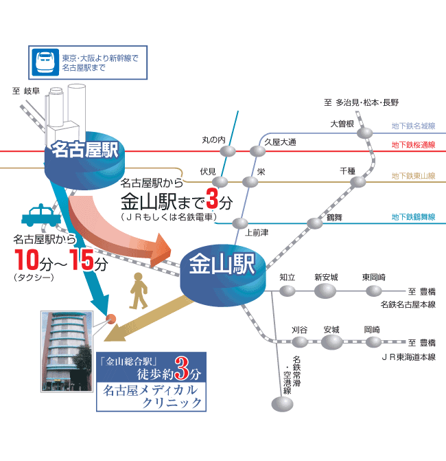
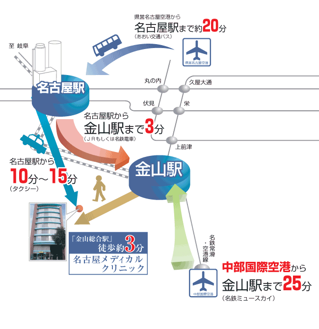
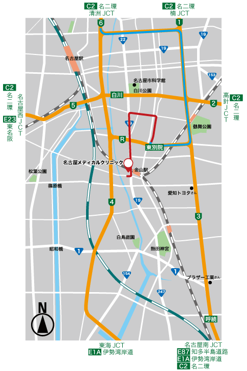
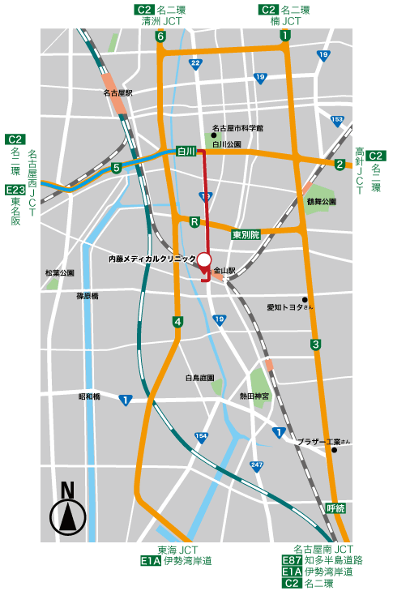
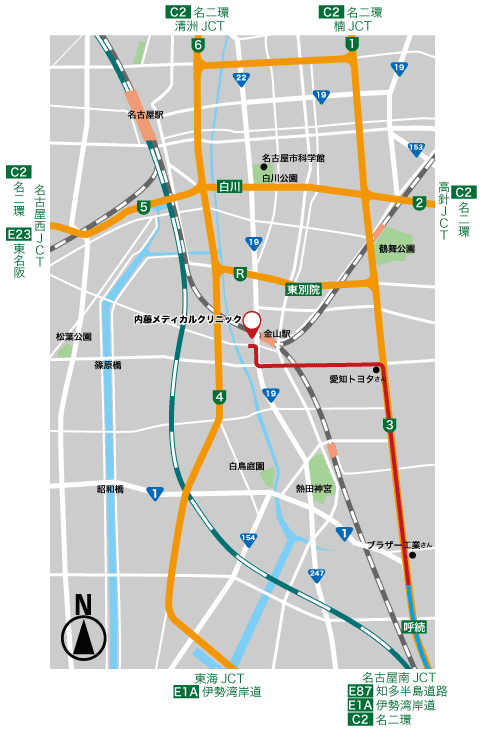
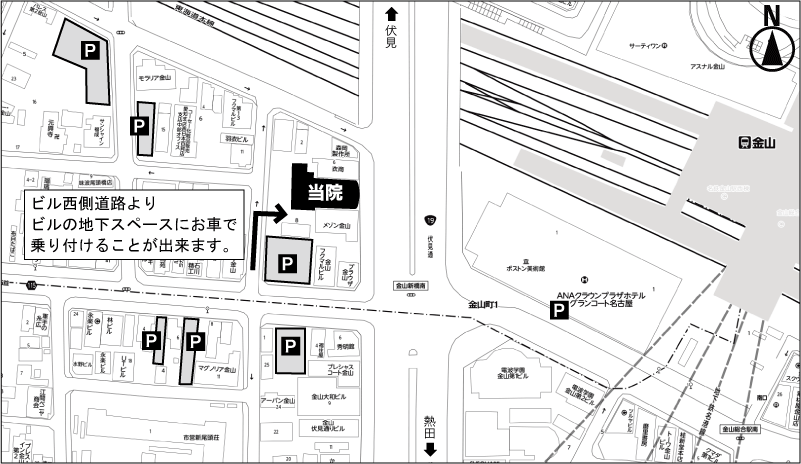
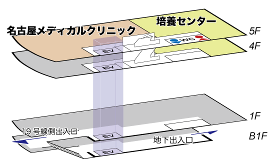

简体中文
简体中文


電車・タクシーをご利用の場合

電車をご利用の場合
● 名古屋駅からＪＲ中央線・ＪＲ東海道線または名鉄に乗り換えて頂き、 金山駅で下車、南口から徒歩で３分。
タクシーをご利用の場合
● 名古屋駅からタクシーにて約１０分～１５分。
飛行機をご利用の場合

車をご利用の場合



- 東別院出口を降りて下さい。
- およそ1km直進して頂き、上前津東(交差点)を左折して下さい。
- およそ750mで、西大須(交差点)を左折して下さい。
- およそ1.7km直進して頂き、金山新橋南(交差点)を右折して下さい。
- 下記地図を参考に近くの駐車場(コインパーキング)をご利用下さい。
- 白川出口を降りて下さい。
- およそ120mで、若宮北(交差点)を右折して下さい。(右側2車線が右折可能レーンです。)
- およそ2.3km直進して頂き、金山新橋南(交差点)を右折して下さい。
- 下記地図を参考に近くの駐車場(コインパーキング)をご利用下さい。
- 呼続出口を降りて下さい。
- およそ3.5km直進して頂き、高辻(交差点)を左折して下さい。
- およそ1.7km直進して頂き、新尾頭(交差点)を右折して下さい。
- およそ280mで、金山新橋南(交差点)を左折して下さい。
- 下記地図を参考に近くの駐車場(コインパーキング)をご利用下さい。
当院周辺のコインパーキング

時間貸駐車場
当院に専用の駐車場はございません。近くの時間貸駐車場をご利用下さい。
フロアマップ

〒460-0024
愛知県名古屋市中区正木4-8-7 れんが橋ビル5階
052-681-1731
フリーダイヤル 0120-681-731